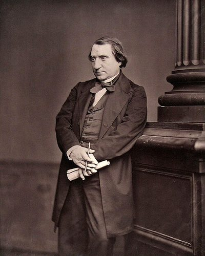

Ideologies / Nationalist
What is Civic Nationalism?
Civic Nationalism is a political ideology in the Nationalist family. Renan argued that a nation is not made by race, language, religion, shared interests or natural frontiers. It is made by two things: a common store of memories, including what a people has agreed to forget, and the present will to go on living together. A nation therefore exists only by the continuing consent of its members, and no population may rightly be annexed against its wishes.
A nation is a daily plebiscite.
Defined from: Ernest Renan, What Is a Nation? (1882)
See how close you are to Civic Nationalism Dare a friend to answer as one


Where Civic Nationalism stands on 13 axes
Each axis runs from 0 to 100. A score of 50 is the middle. On a classic compass it sits in the Libertarian Right quadrant.
| Axis | Position | Score | In words |
|---|---|---|---|
| EconomyMarket to Planned | 40 | Leans Market | |
| OwnershipPrivate to Collective | 25 | Strongly Private | |
| RightsLiberty to Security | 35 | Leans Liberty | |
| GovernmentDemocracy to Autocracy | 20 | Strongly Democracy | |
| StructureDecentralised to Centralised | 55 | Balanced | |
| NationInternationalist to Nationalist | 75 | Strongly Nationalist | |
| ImmigrationMulticulturalist to Assimilationist | 60 | Leans Assimilationist | |
| ValuesProgressive to Traditional | 50 | Balanced | |
| TechnologyAccelerationist to Precautionary | 45 | Balanced | |
| EnvironmentIndustrialist to Environmentalist | 35 | Leans Industrialist | |
| ReligionSecular to Religious | 20 | Strongly Secular | |
| MilitaryPacifist to Militarist | 40 | Leans Pacifist | |
| TradeFree Trade to Protectionist | 55 | Balanced |
Ideologies closest to Civic Nationalism
- Political Zionism81% alike
- Irish Republicanism81% alike
- Aristotelian Polity81% alike
- Communitarianism81% alike
- Machiavellian Republicanism81% alike
Its opposite on this map is Posadism, at 39%.
Parties near Civic Nationalism
- Zionist OrganizationSwitzerland. The Basel Programme (1897)85% alike
- Mexican Liberal PartyMexico. Programme of the Mexican Liberal Party (1906)85% alike
- Democratic Party for the PeopleJapan. Increase Take Home Pay (2024)85% alike
- MorenaMexico. Proyecto de Nación 2018 to 2024 (2017)85% alike
Common questions
What is Civic Nationalism?
Civic Nationalism is a political ideology in the Nationalist family. Renan argued that a nation is not made by race, language, religion, shared interests or natural frontiers. It is made by two things: a common store of memories, including what a people has agreed to forget, and the present will to go on living together. A nation therefore exists only by the continuing consent of its members, and no population may rightly be annexed against its wishes.
What does Civic Nationalism believe?
In one line: A nation is a daily plebiscite. Its strongest positions are Democracy, Secular, Private. Renan argued that a nation is not made by race, language, religion, shared interests or natural frontiers. It is made by two things: a common store of memories, including what a people has agreed to forget, and the present will to go on living together. A nation therefore exists only by the continuing consent of its members, and no population may rightly be annexed against its wishes.
Who founded Civic Nationalism?
Civic Nationalism is defined here from What Is a Nation? (1882) by Ernest Renan. The thinker most tied to it is Ernest Renan (1823 to 1892).
Is Civic Nationalism left wing or right wing?
On a classic two axis compass Civic Nationalism falls in the Libertarian Right quadrant, which means the economic right and the libertarian side. Left and right hide a lot, though, which is why EthosScales scores it on thirteen separate axes.
How is Civic Nationalism different from Political Zionism?
They are close: 81% alike. The biggest gaps are on Military, where Civic Nationalism scores 40 and Political Zionism scores 70, and Religion, where Civic Nationalism scores 20 and Political Zionism scores 45. On each axis, 0 is one end and 100 is the other.
Think this is wrong? Suggest a correction. The scores are editorial estimates.